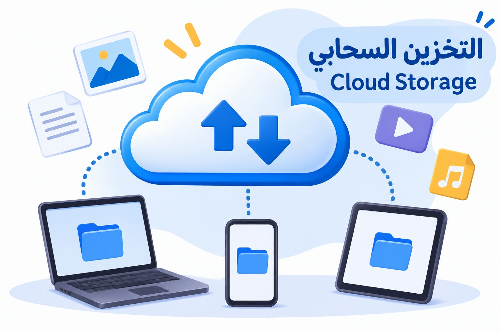

المقدمة
في الماضي كان الإنسان يعتمد على وسائل تقليدية لحفظ الملفات والصور مثل الفلاش ميموري أو الهاتف أو الكمبيوتر. ومع تطور التكنولوجيا وانتشار الإنترنت ظهر التخزين السحابي الذي أصبح من الوسائل الحديثة والمهمة لحفظ البيانات.
عرض الموضوع
ما هو التخزين السحابي؟
التخزين السحابي هو خدمة تتيح للمستخدم حفظ الملفات مثل الصور والفيديوهات والمستندات على أجهزة كمبيوتر كبيرة تسمى الخوادم، ويمكن الوصول إليها من خلال الإنترنت.
أهمية التخزين السحابي
يساعد التخزين السحابي على الاحتفاظ بالملفات وحمايتها، كما يتيح الوصول إليها من أجهزة مختلفة في أي وقت.
مميزات التخزين السحابي
- حفظ الملفات والصور بأمان.
- سهولة الوصول إلى الملفات من أي مكان.
- إمكانية مشاركة الملفات مع الآخرين.
- توفير مساحة على الهاتف والكمبيوتر.
- الاحتفاظ بنسخ احتياطية من البيانات.
صورة توضيحية

مثال على التخزين السحابي
إذا تعرض الهاتف للسرقة، فإن الصور والملفات المحفوظة على التخزين السحابي تظل موجودة، ويمكن استعادتها عند تسجيل الدخول إلى الحساب من هاتف جديد.
جدول مقارنة بين خدمات التخزين السحابي
| الخدمة | الشركة | الاستخدام |
|---|---|---|
| Google Drive | حفظ ومشاركة الملفات | |
| iCloud | Apple | حفظ الصور والبيانات |
| OneDrive | Microsoft | حفظ المستندات والملفات |